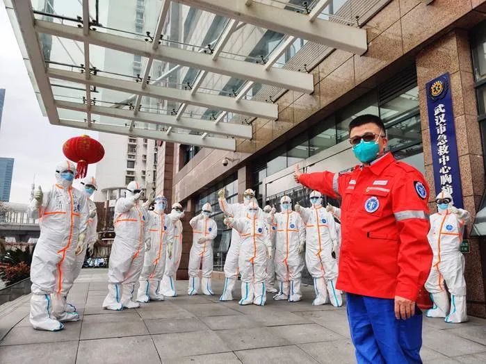
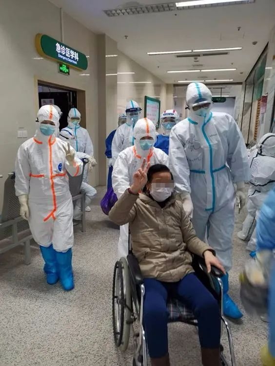
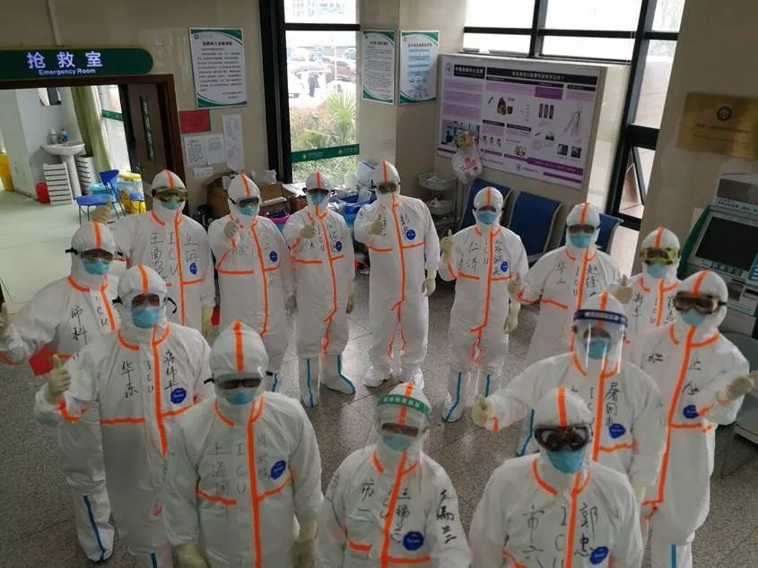
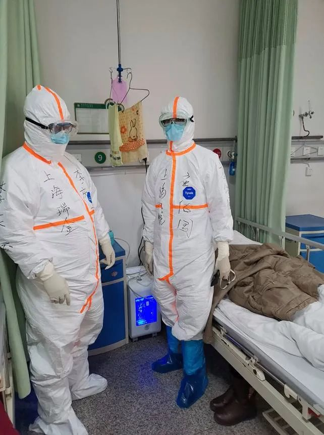

武汉新冠患者病死率逐渐下降到3%，关键原因是什么 | 专访瑞金医院副院长陈尔真
原文链接 备份链接 新冠肺炎重症患者死亡率，比SARS低比普通流感高。 记者 | 黄 祺 3月6日下午，武汉市第三医院光谷院区19楼8病区迎来“关门大吉”。 随着上海市第一康复医院高天霖医生一声“关灯！”，11位医护人员身后一片漆黑，高医 …

整个2月，是上海第三批医疗队ICU医生团队的攻坚阶段，医生们急于寻找更好的治疗措施，提高治愈率，降低死亡率。
记者 | 黄 祺
昨天（3月16日）是上海市第三批援助湖北医疗队在武汉奋战的第50天，下午1点20分，上海医疗队负责的武汉第三医院光谷院区临时ICU病房，正式关闭。医疗队队长、瑞金医院副院长陈尔真表示，下阶段医疗队伍进入休整阶段，做好全面总结，进一步提高业务水平，等待国家的统一调配，疫情不止，战斗不息！

医疗队队长陈尔真正在安排最后一批患者转运
上海医疗队负责的武汉第三医院光谷院区临时ICU病房正式关闭
十天前，武汉第三医院光谷院区一个病区已经关闭，两次“关门大吉”，预示着这家新冠肺炎定点收治医院的新冠肺炎重症患者救治工作已近尾声。等到新冠肺炎患者全部转运到集中收治医院后，这家医院将经过彻底消毒后，恢复正常的医疗服务。
重症医生24小时床边观察
“50天，1200小时的工作对我们来说是终身难忘的。”上海市第三批援助湖北医疗队队员、上海第九人民医院重症医学科应佑国医生向《新民周刊》介绍，昨天已经有13名患者转运到其他医院，今天上午，最后10名患者转运，这些患者将在同济医院光谷院区等医院继续接受治疗。

病人转运到其他医院
ICU关闭后，意味着医疗队ICU医生团队的工作告一段落。
上海市第三批援助湖北医疗队是1月28日（年初四）达到武汉的，截至3月13日累计收治重症、危重症患者107人，治愈出院5人，好转后转入院内其他病房41人，转外院5人（因需ECMO治疗及高危孕产妇），累计死亡36人（其中确诊新冠肺炎24人），新冠肺炎死亡率为22.4%。
事实上，医疗队到达武汉的第一周，由于氧气供应跟不上、治疗设备不足，造成重症患者救治成功率低，基本救治条件具备后，这个团队负责的重症患者，死亡率逐步下降，是武汉各级医院中重症患者救治效果比较好的一家医院。
应佑国医生介绍，武汉第三医院ICU病房一共有医生26人，其中13人为上海医疗队的医生。他们中有20位值班医生，其中10人为上海医疗队的医生，另外10人是武汉当地的医生。病房保持24小时都有医生值班，每一班医生持续工作6小时。医生对患者病情的密切观察，保证了病情有任何变化都能得到及时的救治，大大提高了治愈率。
“对ICU医生来讲，重症病人在哪，我们就在哪，ICU医生是为重症病人而生的。”应佑国医生说。
ICU病房住院患者最多的时候有三十多个病人，少的时候也有二十五六个病人，这对于在病房中值班的医生来说，是巨大的压力。
整个2月，是上海第三批医疗队ICU医生团队的攻坚阶段，医生们急于寻找更好的治疗措施，提高治愈率，降低死亡率。他们在一个个危重症患者的救治中，在与死神一次次的较量中，找寻突破口和诊疗路径。头一个月摸索治疗的过程是相当艰苦的。“那段时间，所有的精力都用在提高治愈率上，特别累，回到酒店倒头就睡，连跟家里视频的力气都没有，我爱人发微信问我怎么‘失联’了，我就回两个字‘没空’。”应佑国说。
ICU医生团队在这段时间承受着心理和体力的双重压力，一方面医生们希望迅速降低死亡率，不断探索有效的救治方法；另一方面，穿着防护服在病房中时刻监测患者病情，体力上是巨大的考验。“以前在自己医院的重症监护室，我一个人管4个病人没问题，但在这里，穿着防护服，一直处于缺氧状态，一般最多只能同时管2名病人。”而且，武汉第三医院的ICU是由普通病房改造的，不像大型医院ICU开放式的格局，病人住在不同的房间，医生需要不停地走动，照顾到不同房间里的病人。

来自上海各家医院的重症医学科医生组成的ICU团队
经过一个月的努力，上海医疗队负责治疗的重症患者，治疗效果逐步提升。应佑国介绍，后期难治的重症患者，主要是自身有多重其他疾病的老年患者，比如大面积脑梗的患者，肾功能衰竭的患者等等。
史无前例的挑战
上海第三批援助湖北医疗队队长陈尔真，也是重症医学专家，因此医疗队的ICU医生团队，有着很强的专业能力，也被给予了更多期待。
应佑国医生说，作为最早到达武汉的医疗队之一，年初四出发前，只有两三天的准备时间。虽然已经在ICU工作近二十年，救治重病患者是他的日常，但亲身参与如此大规模的烈性传染病救治，还是第一次。“到武汉前，说不害怕是假的，心里还是有一定恐惧的。”2003年非典疫情中，应佑国研究生阶段学习的一家军队系统医院，派出几位护士支援，其中几位感染。
到了武汉第三医院，应佑国医生看到的场面让他感觉“非常震撼”，病人的病情都非常的危重，危重病人的死亡率很高。和他之前的设想不同，新冠肺炎重症患者病症不仅仅在肺部，而是全身器官的损伤。“救治的过程中可能比我们想象的更困难一些。”

应佑国医生在病房中
武汉前方的救治，得到了上海后方的全力支持。
救治中，ICU医生的自我防护也是非常重要的环节，特别是重症科医生，在进行气管插管操作时，感染风险比较高。应佑国医生说，2月25日ICU病房已经用上了上海第九人民医院医生发明的“一次性防飞溅隔离巾”，在床边气管插管、吸痰过程中，这个新发明能很好地避免喷溅，降低暴露性感染风险，对气溶胶能起到明显阻隔作用。

武汉近2个月，重症医学科医生们的生活可能是外界难以了解的。应佑国说，50天里的生活只有两点一线。下班前洗好澡、做好消毒，乘班车或者步行到酒店，进酒店直奔自己的房间，关上门再进行消毒。酒店内的活动范围仅限于自己房间到餐厅，拿好饭后直接回房间单独吃饭。这些严格的规定，都是为了避免医护人员之间相互传染。
武汉光谷全称是武汉东湖新技术开发区，类似上海张江，是一个远离闹市区的园区。这里居民较少，但配备了一些医疗机构，成为这次疫情中征用定点医院的理想选择。
应佑国说，酒店与武汉第三医院光谷院区之间相距一公里左右，他唯一的“放风”机会，就是步行上下班。在空荡荡的马路上步行一公里，对于医护人员来说是最珍贵的放松。


· 欧洲27国无一幸免，张文宏：后续发展不容乐观，跨年度疫情风险越来越大
· 我在海外 | 看到英国政府发布“群体免疫”政策，我开始慌了
· 军事 | 受疫情影响，北约“寒冷反应”演习取消，规模更大的“欧洲捍卫者20”呢？
新民周刊所有平台稿件， 未经正式授权
一律不得转载、出版、改编或进行
与新民周刊版权相关的其他行为，违者必究


文章已于修改
原文链接 备份链接 新冠肺炎重症患者死亡率，比SARS低比普通流感高。 记者 | 黄 祺 3月6日下午，武汉市第三医院光谷院区19楼8病区迎来“关门大吉”。 随着上海市第一康复医院高天霖医生一声“关灯！”，11位医护人员身后一片漆黑，高医 …
原文链接 备份链接 这是驰援武汉的复旦大学附属中山医院医疗队领队朱畴文的谈话录音，讲述了他和他的团队从抵达武汉，进驻医院到参与治疗过程的经历，在谈到武汉和武汉人时，他几度声音哽咽。关于防护物资、关于病人收治、关于疫苗、关于心理压力、关于 …
原文链接 备份链接 *************▲*************湖北省医疗救治组专家在同济医院中法新城院区新冠肺炎重症病区与患者交谈。 （新华社/图） 全文共6264字，阅读大约需要14分钟。 就在徐慧连觉得患者能化险为夷时， …
原文链接 备份链接 澎湃新闻记者 李佳蔚 郁斐 制图 进驻武汉第一天，上海医疗队就知道，要治愈的不仅是患者身体，治愈出院也不会是服务终点。 时至今日，事实证明他们做得不赖。 2月7日，上海中山医院第四批医疗队进驻武汉大学人民医院东院，整建 …
原文链接 备份链接 这次来武汉，我从楼上看下去， 整个大街空无一人，这样的武汉我第一次见湘雅二医院医护人员全副武装，进入隔离病房。受访者供图，下同 一瓶剁辣椒，一支哮喘药，湘雅二医院的刘先领找齐“保命”的家伙，准备去武汉。 这是元宵节前一 …